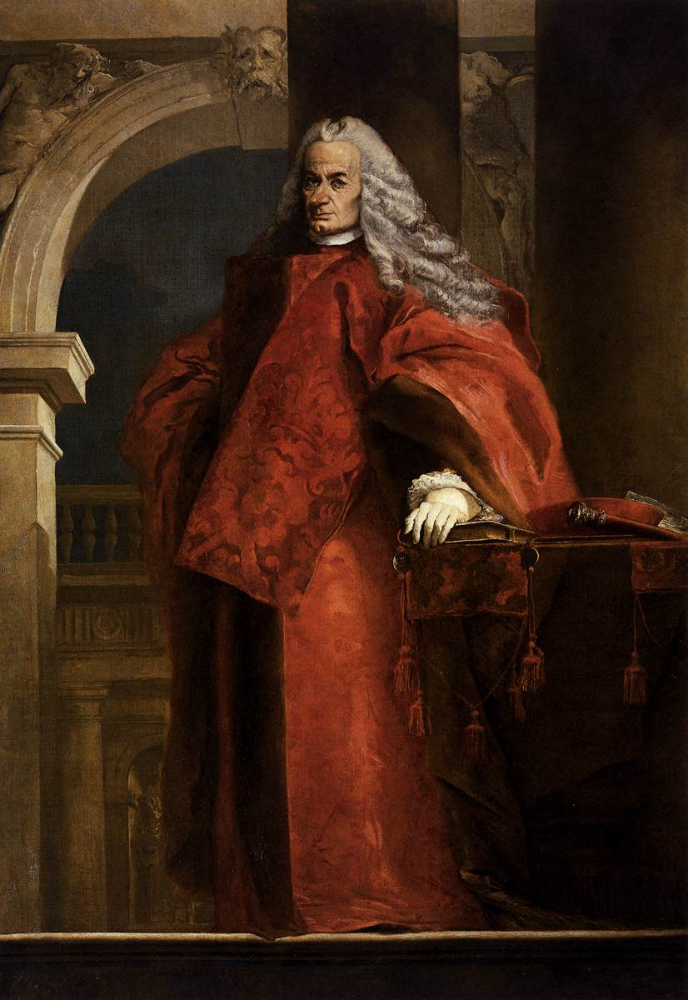

Patricios e Plebeus Ricos

No Império Romano, os patrícios, os nobres e os plebeus ricos faziam parte dos grupos mais influentes da sociedade.
Os patrícios eram descendentes das famílias mais antigas de Roma e concentravam grande poder político, econômico e religioso.
Os nobres formavam a elite romana, composta por patrícios e por plebeus que conquistaram prestígio ao ocupar cargos importantes e possuir grandes propriedades.
Já os plebeus ricos eram cidadãos que enriqueceram por meio do comércio, da agricultura e de outras atividades econômicas, alcançando destaque social e, em muitos casos, participando da administração do Império, mesmo sem pertencer às famílias tradicionais.